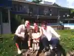
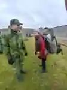

I’m curious about technology, but just as curious about people. I like putting myself in situations where I have something new to learn, and I’m not afraid to change course when a new experience challenges what I think I know. That’s taken me to Brazil on my own, into studying Chinese, and into military service working with drones.

With friends during my exchange in Brazil.
01 / Exchange
Making friends in Brazil
I went to Brazil on my own for an exchange at the University of São Paulo. I came home with friendships and new perspectives. The part I remember most is getting to know people whose lives looked different from mine, and finding common ground anyway.
Living somewhere unfamiliar reminded me how much there is to gain by saying yes to something new.

My mother testing out my backpack.
02 / Swedish Armed Forces
Learning by doing
During military service, I worked as a drone assistant mechanic, maintaining and troubleshooting UAVs alongside my team. It taught me to take responsibility, work carefully, and trust people with different strengths.
It was another new environment that gave me skills, perspective, and friendships I still value.
03 / Language
Studying Chinese
Learning Chinese reminds me that being a beginner is a good thing. I enjoy the patience it takes to understand a different language and how it changes what you notice when you listen to people.
04 / Community
Bringing people together
I’ve mentored students, helped new arrivals settle in, and organized trips and events. I enjoy building a sense of community just as much as I enjoy building things with technology.